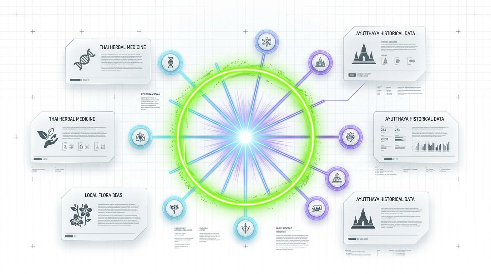

GRURU MUSEUM: พลิกคลังความรู้ชาติสู่อนาคต
“New Knowledge. New Storytelling. Built for Everyday Living.” — ข้อเสนอยุทธศาสตร์สร้างพิพิธภัณฑ์ความรู้ดิจิทัลและ Knowledge Graph แห่งแรกของไทย สำหรับนำเสนอ ฯพณฯ รัฐมนตรีว่าการกระทรวงดิจิทัลเพื่อเศรษฐกิจและสังคม
เปลี่ยน "ข้อมูลที่หลับใหลในอดีต"
เป็น "ปัญญาประดิษฐ์ที่คนไทยใช้ได้จริงทุกวัน"
ปัจจุบันข้อมูลประวัติศาสตร์ วิทยาศาสตร์ และภูมิปัญญาไทยกระจัดกระจายและเข้าถึงยากในรูปแบบเอกสารดั้งเดิม GRURU MUSEUM นำแนวคิด Future Archaeology มาถอดรหัสเชื่อมโยงเป็นโครงข่ายความรู้ ให้ค้นหา เข้าใจได้ใน 3 วินาที และนำไปสร้างมูลค่าทางเศรษฐกิจ
ทำไมประเทศไทยต้องมี "Knowledge Graph ประจำชาติ"?
วิกฤตสารสนเทศยุคใหม่: ข้อมูลล้นทะลัก (Information Overload) แต่ขาดความน่าเชื่อถือและการเชื่อมโยง
ข้อมูลถูกตัดขาด (Siloed Archives)
คลังหนังสือ คลังวิจัย และข้อมูลโบราณคดีไทยอยู่ในรูปเล่มและ PDF ที่ไม่เชื่อมกัน เครื่องมือค้นหาทั่วไปมองเห็นแค่ตัวอักษร แต่ไม่เข้าใจ "ความสัมพันธ์ของความรู้"
สมาธิสั้นลงแต่ต้องการรู้ลึก
คนรุ่นใหม่เบื่อคลิปสั้นที่ฉาบฉวยและไม่มีที่มา แต่ก็ไม่อยากอ่านเอกสารวิชาการยาวเหยียด พวกเขาต้องการ Visual Storytelling ที่ดูจบและนำไปใช้ได้ทันที
AI ขาดคลังข้อมูลไทยแท้ (AI Hallucination)
โมเดล AI ทั่วโลกตอบคำถามเกี่ยวกับภูมิปัญญาไทยผิดเพี้ยน หากรัฐบาลไม่มีโครงสร้าง Knowledge Graph ที่เป็นระบบ จะเสียอธิปไตยทางข้อมูลและวัฒนธรรม
GRURU MUSEUM: โครงสร้างพื้นฐานทางปัญญา (Intellectual Infrastructure) ของกระทรวงดิจิทัลฯ
สร้างคลังความรู้ที่ตรวจสอบได้ 100% ตอบโจทย์เศรษฐกิจสร้างสรรค์ (Soft Power) และเป็นคลังข้อมูลอ้างอิงให้ AI ยุคต่อไป
Future Archaeology: แกลเลอรีศิลปะ ผสาน ห้องแล็บ Sci-Fi
ดีไซน์สไตล์ Tech Light Theme สว่าง สะอาดตา อารมณ์ห้องทดลองล้ำสมัยที่สงวนคุณค่าทางประวัติศาสตร์
อัตลักษณ์แบรนด์ผสานภูมิปัญญาไทย (Thai Cybernetic Heritage)
โลโก้ GRURU MUSEUM ได้รับการออกแบบโดยถอดรหัส "ลายประจำยามและกนกดิจิทัล" ร้อยเรียงเข้ากับวงจรอิเล็กทรอนิกส์และโครงข่าย Knowledge Nodes สื่อถึงการเชื่อมโยงภูมิปัญญาบรรพบุรุษสู่อนาคต
“อดีตคือข้อมูล • อนาคตคือเรื่องเล่า”
สำหรับคนรุ่นใหม่ที่อยากเข้าใจโลกให้ลึกกว่าคลิปสั้น แต่ไม่อยากรู้สึกเหมือนนั่งเรียนในห้องเรียน
Data Booming: ระเบิดความรู้ เข้าใจได้ใน 3 วินาที
จากจุดเริ่มต้น 1 ประเด็น สู่การแตกกิ่งก้านความเชื่อมโยงในแบบ Radial Burst ให้ผู้ใช้เห็นภาพรวมและเจาะลึกได้ทันที
การปฏิวัติ UX ข้อมูลภาครัฐ (The 3-Second Cognitive Rule)
คนยุคดิจิทัลตัดสินใจอ่านต่อหรือไม่ภายใน 3 วินาที GRURU แก้ปัญหานี้ด้วยระบบ Data Booming:

5 ขั้นตอนการแปลงมรดกความรู้ (Knowledge Pipeline)
เส้นทางการเปลี่ยนเอกสารประวัติศาสตร์และภูมิปัญญาชาติ ให้กลายเป็นชุดข้อมูลดิจิทัลพร้อมใช้งาน
ตัวอย่างมาตรฐานฉลากความรู้ (Specimen Label System)
ทุกชิ้นข้อมูลมี Metadata มาตรฐานระบุตัวตน เช่น GRM-1872-SCI-014 เพื่อให้สามารถอ้างอิง ตรวจสอบย้อนกลับ (Traceability) และเชื่อมต่อกับ Open Government Data ได้
การบูรณาการข้อมูลข้ามมิติ (Integrated Knowledge Graph)
รวมคลังหนังสือ ตำราการศึกษา ฐานข้อมูลเปิด และภูมิปัญญาชุมชน เข้าสู่สมองกลความรู้ศูนย์กลาง

วรรณกรรม จดหมายเหตุ เอกสารประวัติศาสตร์ และงานวิจัย คัดกรองผ่าน OCR และ Semantic Extraction
หลักสูตรการศึกษา นิยาม ทฤษฎี วิทยาศาสตร์ และการแพทย์ เชื่อมโยงบริบทให้เห็นความสัมพันธ์ข้ามวิชา
ฐานข้อมูลภาครัฐ สถิติ ข้อมูลวิจัยเชิงตัวเลข และ Open Data ของกระทรวงดิจิทัลฯ เชื่อมโยงผ่าน API
ภูมิปัญญาท้องถิ่น ปราชญ์ชาวบ้าน ข้อถกเถียง และองค์ความรู้จากประชาชนที่ผ่านการกลั่นกรอง
ตอบโจทย์คนไทย 3 ช่วงวัย: จากความรู้ สู่การใช้จริง
ออกแบบประสบการณ์เฉพาะบุคคลเพื่อยกระดับทักษะและการเรียนรู้ตลอดชีวิต (Lifelong Learning)
Curious Starter
นักศึกษาจบใหม่ & First Jobber
- เสพข้อมูลผ่านสมาร์ตโฟนเป็นหลัก
- ต้องการเรื่องที่อ่านจบใน 3–5 นาที
- ต้องการ Knowledge Card (1080×1350) แชร์ลง Social Media เพื่อสร้างความภูมิใจ
Creative Professional
นักออกแบบ ครีเอเตอร์ และนักพัฒนา
- มองหาแรงบันดาลใจและข้อมูลอ้างอิงที่เชื่อถือได้
- ใช้งาน Interactive Graph แบบเจาะลึกเพื่อดูความเชื่อมโยง
- ส่งออกชุดข้อมูล (Export Data) ไปพัฒนาผลงานสร้างสรรค์ต่อยอด
Lifelong Learner
คนทำงานและพ่อแม่รุ่นใหม่
- สนใจที่มาของเรื่องใกล้ตัว เช่น อาหาร สุขภาพ และสิ่งแวดล้อม
- ต้องการความน่าเชื่อถือ ตรวจสอบแหล่งอ้างอิงได้ในคลิกเดียว
- ต้องการ Everyday Takeaway ที่นำไปใช้ดูแลครอบครัวได้จริง
มาตรฐานวิศวกรรมซอฟต์แวร์และการเข้าถึงสำหรับทุกคน
พัฒนาด้วยเทคโนโลยี Next.js + D3.js และยึดหลักเกณฑ์ความเท่าเทียมทางดิจิทัล (WCAG AA)
Modern Web & Visualization Stack
Accessibility & Color Universal Design
แผนการดำเนินงานและการขยายผลระดับประเทศ
จากโครงการนำร่องต้นแบบ สู่โครงสร้างพื้นฐานดิจิทัลแห่งชาติในระยะเวลา 18 เดือน
Pilot & Flagship Showcase
- เปิดตัวเว็บพอร์ทัล GRURU MUSEUM
- ทำชุดข้อมูลนำร่อง: "อยุธยาศึกษา & สมุนไพรไทย" (500 โหนดหลัก)
- สาธิต Data Booming และ Interactive Graph ให้ประชาชนทดลองใช้งาน
Open API & Inter-Ministry
- เชื่อมโยงข้อมูลกับกระทรวงวัฒนธรรม, กระทรวง อว., และหอสมุดแห่งชาติ
- เปิด Open Data API สำหรับมหาวิทยาลัยและ Startup ไทย
- รองรับการสร้าง Knowledge Card และโมดูลการเรียนรู้ในโรงเรียน
National AI Grounding Engine
- เป็นฐานข้อมูลอ้างอิงกลาง (Grounding Source) สำหรับ AI สัญชาติไทย
- ขยายสู่ 100,000+ โหนดความรู้ครอบคลุมทุกมรดกภูมิปัญญาชาติ
- เปิดพื้นที่จัดแสดงเสมือนจริงแบบ Physical-Digital Integration
พร้อมดำเนินการด้วย Google Antigravity Agentic Framework ทันที
ข้อเสนอเชิงนโยบายเพื่อการอนุมัติ (The Strategic Ask)
โอกาสสำคัญในการประกาศผลงานนวัตกรรมดิจิทัลระดับชาติ เพื่อคนไทยทุกคน
สิ่งที่กระทรวงดิจิทัลฯ และประเทศจะได้รับ (Key Returns)
ข้อเสนอเพื่อโปรดพิจารณาอนุมัติ (Request for Approval)
- เห็นชอบในหลักการ จัดตั้งโครงการ GRURU MUSEUM เป็นโครงการนำร่องด้าน Digital Heritage & Knowledge Graph
- มอบหมายหน่วยงานในสังกัด (เช่น สำนักงานนวัตกรรมดิจิทัล หรือ สรอ.) สนับสนุนข้อมูลเปิด (Open Data) และทรัพยากรประมวลผล
- อนุมัติจัดทำแผนแม่บท Prototype เพื่อเปิดตัวนิทรรศการสาธิตรอบปฐมทัศน์ภายใน 90 วัน